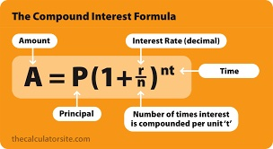

Lab 2 -- C++ expression and math functions
The programming problem
Write a C++ program named "invest.cpp" that computes the total anticipated future value of the investment at the end of the years allotted.
the future amount may be computed using the formula shown below.

The program prompts the user to enter :
- P: the principle amount of the investment,
- r: the interest rate,
- n: the number of times interest is compounded per year (1 or 12),
- t: number of years of the investment.
Your program computes and displays the future value of the investment.
Once you finished writing your program, compile and run the program.
Here is an example run of the program:
Welcome to the investment helper!
Enter principle amount of your investment : $ 2500
Enter the interest rate: 6.5
Enter the number of times interest is compounded per year: 12
Enter the number of years of this investment: 10
Your investment of $2500 will grow into $4780.44 at the end of 10 years.
Here is another example run of the program:
Welcome to the investment helper!
Enter principle amount of your investment : $ 3000
Enter the interest rate: 4.5
Enter the number of times interest is compounded per year: 12
Enter the number of years of this investment: 20
Your investment of $3000 will grow into $7366.34 at the end of 20 years.
Submit the program:
Create a script file that capture the outputs of your program.
script log2
pr -n -t -e4 invest.cpp
g++ invest.cpp -o run
run
run
run
run
exit
These steps creates the script file named log2.
For this lab, submit the following two files: invest.cpp and log2.